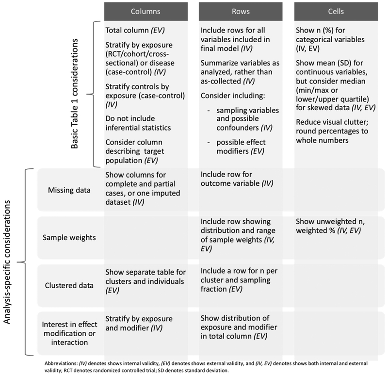

library(dplyr)
library(Hmisc)
data(mtcars)
mtcars$am_f <- factor(mtcars$am, 0:1, c("Manual", "Automatic"))
mtcars$vs_f <- factor(mtcars$vs, 0:1, c("V", "Straight"))
d <- mtcars %>% select(mpg, cyl, am_f,vs_f)
Hmisc::label(d$mpg) <- "Miles per gallon"
Hmisc::label(d$cyl) <- "Cylinders"
Hmisc::label(d$am_f) <- "Transmission"
Hmisc::label(d$vs_f) <- "Engine"Make a baseline table
Warning
This page is under development. Changes should be expected.
Background
Epidemiologic and clinical research papers often describe the study sample in a first, baseline table. Providing a baseline table is one of the recommendations of the CONSORT (Moher et al. (2012)) and STROBE (von Elm et al. (2007)) statements. If well-executed, it provides a rapid, objective, and coherent grasp of the data and can illuminate potential threats to internal and external validity (Hayes-Larson et al. (2019)).
Main important considerations
Baseline tables can be presented in different ways, but certain features are common and some recommendations need be followed. In the next paragraph and figure we provide an overview of the main important considerations, for more detailed review and guidelines see (e.g. Moher et al. (2012), Hayes-Larson et al. (2019)).
Characteristics are generally presented on the left as rows and groupings at the top as columns. In RCTs, groups are defined by treatment allocation. If appropriated, the overall population’s characteristics may be presented in a separate column. Characteristics should include information about the study participants (e.g., demographic, clinical, social) and information on exposures and any particular characteristics that may be predictive of the studied outcome (e.g., health status at baseline). Inside each cell, descriptive statistics are typically given as frequency and percentage for categorical variables and mean (standard deviation) or median (25th-75th percentile or minimum-maximum) for continuous variables. The type of statistical measurement used should be indicated (e.g., together with the characteristic, in a footnote). The number of participants with missing data should be reported for each variable of interest.
Important note: Baseline table are descriptive tables, significance tests and inferential measures (e.g. standard errors and confidence intervals) should be avoided in observational studies as well as in RCTs (see items 14a and 15a and of the STROBE and CONSORT statements, respectively, Vandenbroucke et al. (2007)@MOHER201228). In RCTs, testing for differences between randomized groups is irrelevant because baseline differences are, by definition, caused by chance.

How to program a baseline table
Many developers have published tools for building baselines tables. When choosing one please consider the flexibility of the tool. Indeed, requirements for the contents and formatting of baseline tables may vary depending on the project, the authors, the target journal, etc. Here we present few (very flexible) options for R and stata.
In R
Data
Using gtsummary
#Make a table stratified by transmission
library(gtsummary)
d %>% tbl_summary(by = am_f)| Characteristic | Manual, N = 191 | Automatic, N = 131 |
|---|---|---|
| Miles per gallon | 17.3 (15.0, 19.2) | 22.8 (21.0, 30.4) |
| Cylinders | ||
| 4 | 3 (16%) | 8 (62%) |
| 6 | 4 (21%) | 3 (23%) |
| 8 | 12 (63%) | 2 (15%) |
| Engine | ||
| V | 12 (63%) | 6 (46%) |
| Straight | 7 (37%) | 7 (54%) |
| 1 Median (IQR); n (%) | ||
This is the basic usage:
- variable types are automatically detected so that appropriate descriptive statistics are calculated,
- label attributes from the data set are automatically printed,
- missing values are listed as “Unknown” in the table,
- variable levels are indented and footnotes are added.
Defaults options may be customized.
# declare cylinders as a continuous variable,
# for this variable calculate the mean and sd value,
# add an overall column,
# change the missing text
d %>%
tbl_summary(by = am_f,
type = list(cyl ~ 'continuous'),
statistic = list(cyl ~ "{mean} ({sd})"),
missing_text = "Missing") %>%
add_overall()| Characteristic | Overall, N = 321 | Manual, N = 191 | Automatic, N = 131 |
|---|---|---|---|
| Miles per gallon | 19.2 (15.4, 22.8) | 17.3 (15.0, 19.2) | 22.8 (21.0, 30.4) |
| Cylinders | 6.19 (1.79) | 6.95 (1.54) | 5.08 (1.55) |
| Engine | |||
| V | 18 (56%) | 12 (63%) | 6 (46%) |
| Straight | 14 (44%) | 7 (37%) | 7 (54%) |
| 1 Median (IQR); Mean (SD); n (%) | |||
Additional information
Once produced gtsummary tables can be converted to your favorite format (e.g. html/pdf/word).
For more information see here. For detailed tutorial and additional options see the very complete vignette and website
Using atable
library(atable)
table1=atable(d,
target_cols = c("mpg" , "cyl" , "vs_f"),
group_col = "am_f",
format_to="Word")
#Or similar using the formula interface
## Not run:
table1=atable(mpg+cyl+ vs_f ~ am_f, d,format_to="Word")
## End(Not run)
table1 Group Manual Automatic p stat Effect Size (CI)
1 Observations
2 19 13 <NA> <NA> <NA>
3 Miles per gallon
4 Mean (SD) 17 (3.8) 24 (6.2) 0.0019 0.64 -1.5 (-2.3; -0.65)
5 valid (missing) 19 (0) 13 (0) <NA> <NA> <NA>
6 Cylinders
7 Mean (SD) 6.9 (1.5) 5.1 (1.6) 0.013 0.48 1.2 (0.41; 2)
8 valid (missing) 19 (0) 13 (0) <NA> <NA> <NA>
9 Engine
10 V 63% (12) 46% (6) 0.56 0.35 2 (0.38; 11)
11 Straight 37% (7) 54% (7) <NA> <NA> <NA>
12 missing 0% (0) 0% (0) <NA> <NA> <NA>By default atable is printing p-values, test statistics as well as effect sizes with a 95% confidence interval. As stated above, baseline tables are descriptive tables and should not contain this type of information. Don’t forget to remove the columns.
table1=table1%>%select(-"p",-"stat",-"Effect Size (CI)")
table1 Group Manual Automatic
1 Observations
2 19 13
3 Miles per gallon
4 Mean (SD) 17 (3.8) 24 (6.2)
5 valid (missing) 19 (0) 13 (0)
6 Cylinders
7 Mean (SD) 6.9 (1.5) 5.1 (1.6)
8 valid (missing) 19 (0) 13 (0)
9 Engine
10 V 63% (12) 46% (6)
11 Straight 37% (7) 54% (7)
12 missing 0% (0) 0% (0)The table may also be split up by strata. For example, we can decide to present separately the characteristics of car with a “V” or a “Straight” engine.
table1=atable(mpg+cyl ~ am_f|vs_f , d,
format_to="Word")
table1=table1%>%select(-"p",-"stat",-"Effect Size (CI)")
table1 Group Manual Automatic
1 V
2 Observations
3 12 6
4 Miles per gallon
5 Mean (SD) 15 (2.8) 20 (4)
6 valid (missing) 12 (0) 6 (0)
7 Cylinders
8 Mean (SD) 8 (0) 6.3 (1.5)
9 valid (missing) 12 (0) 6 (0)
10 Straight
11 Observations
12 7 7
13 Miles per gallon
14 Mean (SD) 21 (2.5) 28 (4.8)
15 valid (missing) 7 (0) 7 (0)
16 Cylinders
17 Mean (SD) 5.1 (1.1) 4 (0)
18 valid (missing) 7 (0) 7 (0)As gtsummary, atable may be exported in different formats (e.g. LATEX, HTML, Word) and it is intended that some parts of atable can be altered by the user. For more details see Ströbel (2019) as well as the package vignette. An other informative vignette can be found by typing the following command in R:
vignette("modifying", package = "atable")In Stata
Using btable
The table is constructed in a two-step approach using two functions: btable() produces an unformatted, raw table, which is then formatted by btable_format to produce a final, publication-ready table. By default, the raw table contains all summary measures, and—if there are two groups—effect measures and p-values. Optionally, the table can be restricted to effect measures of choice and a number of alternative calculations for confidence intervals are available.
Instalation
#In order to install btable from github the github-package is required:
net install github, from("https://haghish.github.io/github/")
#You can then install the development version of btable with:
github install CTU-Bern/btableExample
# load example dataset
sysuse auto2
# generate table
btable price mpg rep78 headroom, by(foreign) saving("excars") denom(nonmiss)
# format table (default formatting, removing the effect measures and P-values)
btable_format using "excars", clear drop(effect test)The formatting option can be modified. For example we can decide we may want to
- present the median and lower and upper quartiles instead of the mean and standard deviation
- remove the overall column, and the information column
#If we want to display median [lq, up] for all the continuous variables
btable_format using "excars", clear descriptive(conti median [lq, uq]) drop(effect test total info)
#If we want to display mean (sd) for the mpg variable and median [lq, up] for all the other continuous variables
btable_format using "excars", clear desc(conti median [lq, uq] mpg mean (sd)) drop(effect test total info)
| Domestic (N = 52) | Foreign (N = 22) |
|---|---|---|
mean (sd), median [lq, uq] or n (%) | mean (sd), median [lq, uq] or n (%) | |
Price | 4783 [4184, 6234] | 5759 [4499, 7140] |
Mileage (mpg) | 20 (4.7) | 25 (6.6) |
Repair Record 1978 | ||
Poor | 2 (4.2%) | 0 (0.00%) |
Fair | 8 (17%) | 0 (0.00%) |
Average | 27 (56%) | 3 (14%) |
Good | 9 (19%) | 9 (43%) |
Excellent | 2 (4.2%) | 9 (43%) |
Headroom (in.) | 3.5 [2.3, 4.0] | 2.5 [2.5, 3.0] |
Quiz
Here is a short quiz to check your understanding…
Question 1:
Which summary statistics can I give to describe continuous and categorical variables?
Answer
Descriptive statistics are typically given as frequency (percentage) for categorical or binary variables, mean and (standard deviation) for continuous normal variables and median (25th-75th percentile or minimum-maximum) for non-normal continuous variables.
References
Hayes-Larson, Eleanor, Katrina L. Kezios, Stephen J. Mooney, and Gina Lovasi. 2019. “Who Is in This Study, Anyway? Guidelines for a Useful Table 1.” Journal of Clinical Epidemiology 114: 125–32. https://doi.org/https://doi.org/10.1016/j.jclinepi.2019.06.011.
Moher, David, Sally Hopewell, Kenneth F. Schulz, Victor Montori, Peter C. Gøtzsche, P. J. Devereaux, Diana Elbourne, Matthias Egger, and Douglas G. Altman. 2012. “CONSORT 2010 Explanation and Elaboration: Updated Guidelines for Reporting Parallel Group Randomised Trials.” International Journal of Surgery 10 (1): 28–55. https://doi.org/https://doi.org/10.1016/j.ijsu.2011.10.001.
Ströbel, Armin Michael. 2019. “Atable: Create Tables for Clinical Trial Reports.” R J. 11: 137.
Vandenbroucke, Jan P., Erik von Elm, Douglas G. Altman, Peter C. Gotzsche, Cynthia D. Mulrow, Stuart J. Pocock, Charles Poole, James J. Schlesselman, Matthias Egger, and STROBE Initiative. 2007. “Strengthening the Reporting of Observational Studies in Epidemiology (STROBE) Explanation and Elaboration.” EPIDEMIOLOGY 18 (6): 805–35. https://doi.org/10.1097/EDE.0b013e3181577511.
von Elm, Erik, Douglas G Altman, Matthias Egger, Stuart J Pocock, Peter C Gøtzsche, and Jan P Vandenbroucke. 2007. “The Strengthening the Reporting of Observational Studies in Epidemiology (STROBE) Statement: Guidelines for Reporting Observational Studies.” The Lancet 370 (9596): 1453–57. https://doi.org/https://doi.org/10.1016/S0140-6736(07)61602-X.